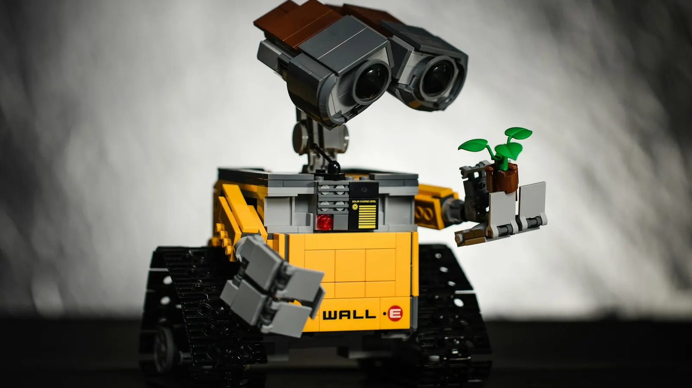

张桃红
实验室负责人 · Professor
专注具身智能理论、机器人系统与跨学科应用，形成“科研成果 — 成员协作 — 合作生态 — 开放联系”的一体化实验室门户。
团队以“感知 — 认知 — 协作”闭环为核心：具身感知负责在复杂环境中捕获细粒度体感与视觉信息； 认知决策与运动规划将多模态数据、SLAM 与控制算法融合成可解释的动作策略； 人机协作与体验则面向医疗、工业和公共服务等场景，将算法落地为安全、可信的交互系统。
构建多模态视觉 / 触觉 / 语音融合传感体系，引入光场重建、事件相机与高精度 IMU，让智能体获得纳米级表面感知、语义级场景理解与复杂人机语义对话能力，支撑粗糙度检测、缺陷识别与移动辅助等核心案例。
研究具身世界模型、决策闭环与 SLAM 导航，融合大规模预训练、强化学习与可解释控制，具备自适应路径规划、语义避障、协作操作等能力，可根据场景自动切换运动模式并保证安全冗余。
针对医疗康复、工业协作、公共服务等场景设计情感化交互与协同机制，通过语音 / 手势 / 眼动等多通道输入实现自然对话、权限管控及多设备协同，确保“可用、可信、有温度”的体验。
精选项目落地与研究成果展示，体现技术可靠性与应用价值
纳米级粗糙度原位在线智能检测，实现工业生产中表面质量的实时监控与精准测量
多通道、多尺度、多特征融合的 AI 模型，实现复杂工业场景下的高精度缺陷检测
基于深度学习的目标检测算法与混合特征提取网络（HFE-Net），实现高效精准的自动化分拣
融合视觉深度学习、智能导航、语音交互等前沿技术，为行动不便人士提供安全、智能、有温度的出行解决方案
基于视觉的磨粒智能检测，实现油液磨粒的自动识别与分析
自动驾驶轮式机器人智能大脑定制，适配智能婴儿车、智能物流车
汇聚顶尖人才，推动具身智能与机器人技术创新 · 已培养研究生 44 人
实验室负责人 · Professor

Ph.D. Candidate

Ph.D. Candidate

M.S. Candidate

M.S. Candidate

技术合作与产业应用，共同推进具身智能技术发展。
无论是深入了解科研成果、共建实验场景，还是产学研合作，我们都期待与您对话。